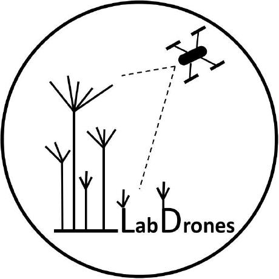

'">
GeoCatalog
v0.0.1
Visualização & Filtros
Mapa de Fundo:
OpenStreetMap
World Imagery (Satélite Esri)
Colorir / Filtrar por:
Projeto
Município
Plataforma (Drone)
Ano do Voo
📥 Exportar Dados (CSV)
◀